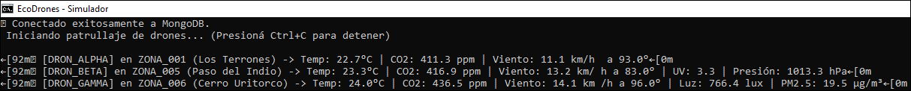
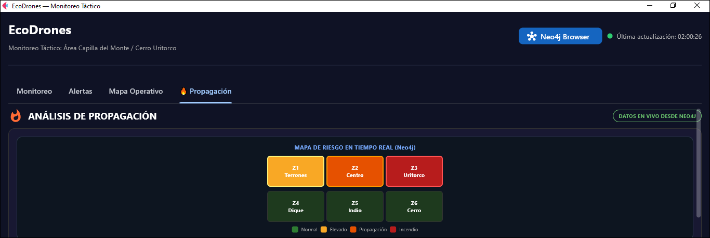
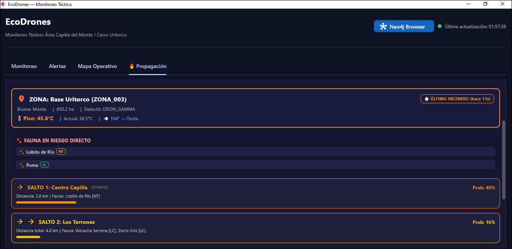
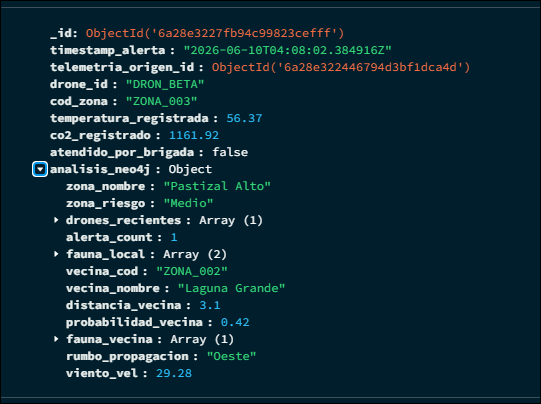
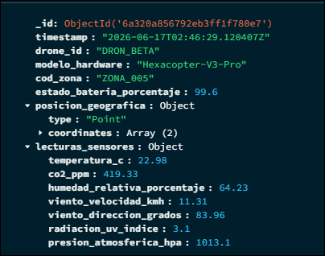
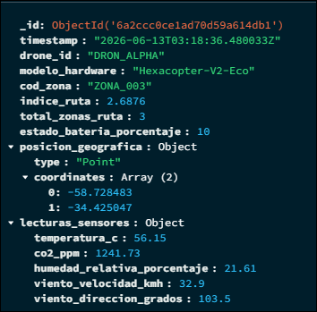
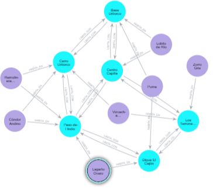

EcoDrones
Sistema de Monitoreo Ambiental con Drones
Detección Temprana de Focos Ígneos y Protección de Biodiversidad
Capilla del Monte / Cerro Uritorco — Córdoba, Argentina
Trabajo Práctico — Etapa Final
Universidad Argentina De la Empresa (UADE)
Materia: Ingeniería de Datos 2
Profesor: Fernández Alfonso Martín
Grupo: Piña Matias, Vazquez Luciana, Micheli Alejo Gonzalo, Lambert Theo, Huertas Maximiliano Ivan, D'Elia Tomas
Curso: 2026 C1 — Lunes Tarde
Fecha de entrega: Junio 2026
Etapa: Final
2. Resumen Ejecutivo
Las sierras de Córdoba enfrentan incendios forestales recurrentes que amenazan la biodiversidad local y las comunidades aledañas. Los mecanismos actuales de detección tienen latencias de horas, insuficientes para una respuesta oportuna.
EcoDrones es una plataforma de vigilancia ambiental que integra 3 drones autónomos con sensores diferenciados, dos bases de datos NoSQL (MongoDB y Neo4j) y un dashboard táctico en tiempo real. La solución detecta anomalías térmicas en menos de 1 segundo, predice la propagación del fuego mediante análisis de grafos e identifica automáticamente la fauna en peligro.
El valor de la arquitectura reside en la integración bidireccional: MongoDB ingiere telemetría masiva a alta velocidad mientras Neo4j resuelve consultas de propagación y relaciones ecológicas que serían costosas en un modelo relacional. Esta arquitectura de persistencia políglota asigna a cada motor un rol especializado según la naturaleza del dato, siguiendo el principio de diseño orientado a consultas: primero se identificaron los patrones de acceso y luego se diseñaron las estructuras optimizadas para responderlos.
3. Alcance Definitivo del Proyecto
Incluye (funcionalidades demostradas):
- Simulación de telemetría IoT con 3 drones de hardware diferente (esquema flexible).
- Ingestión en MongoDB a 3 documentos/segundo con objetos embebidos GeoJSON.
- Detección automática de incendios (umbral >45°C) con polling continuo.
- Modelado de ecosistema en Neo4j: 6 zonas, 7 especies autóctonas, relaciones topológicas direccionales.
- Análisis predictivo de propagación en cascada (2 saltos) según vector de viento.
- Integración bidireccional MongoDB ↔ Neo4j en tiempo real.
- Dashboard táctico con 4 pestañas: Monitoreo, Alertas, Mapa Operativo, Propagación.
- Panel de acciones de respuesta recomendadas ante incendio.
- Orquestación completa con Docker (un solo comando para levantar/detener).
No incluye (fuera del alcance):
- Hardware real de drones ni control de vuelo físico.
- Integración con sistemas de bomberos o APIs meteorológicas reales.
- Procesamiento de imágenes térmicas o satelitales.
- Autenticación de usuarios ni multi-tenancy.
- Despliegue en cluster productivo (se ejecuta en ambiente local Docker).
4. Objetivos Técnicos (Comprobables)
Cada objetivo está redactado como resultado verificable con consulta, script y evidencia:
| # | Objetivo | Cómo se verifica |
|---|---|---|
| 1 | Ingerir telemetría de 3 drones con estructura diferente en la misma colección | Consultar MongoDB y ver documentos con campos distintos (UV en Beta, PM2.5 en Gamma) |
| 2 | Detectar temperatura >45°C en menos de 2 segundos desde la inserción | Observar en monitor_alertas.py que la alerta se dispara en el ciclo inmediato |
| 3 | Predecir zona de propagación según dirección de viento actual | Consulta Cypher: MATCH (z)-[:LIMITA_CON {direccion: $dir}]->(vecina) RETURN vecina |
| 4 | Identificar fauna en riesgo directo y en zona de propagación | Consulta Cypher: traversal 2 saltos + HABITA_EN, retorna especies con IUCN |
| 5 | Escribir resultado de Neo4j de vuelta en MongoDB (integración bidireccional) | Consultar alertas_disparadas y verificar campo analisis_neo4j embebido |
| 6 | Visualizar posición GPS de drones en mapa satelital en tiempo real | Dashboard pestaña Mapa Operativo con puntos moviéndose |
5. Dataset Utilizado (Simulado)
Contexto Big Data — Las 5V
EcoDrones se enmarca en las 5 dimensiones del Big Data: Volumen (259.200 docs/día, escalable a millones con más drones), Velocidad (3 docs/seg en near-real-time), Variedad (esquema flexible por modelo de dron + grafo topológico + GeoJSON), Veracidad (modelo físico correlacionado, no aleatorio) y Valor (detección temprana de incendios para proteger ecosistemas y comunidades).
Criterio de simulación
Los datos son generados por simulador_continuo.py usando un modelo físico de decaimiento exponencial de temperatura según la distancia al foco de incendio (ZONA_003). No son datos aleatorios triviales: las variables están correlacionadas físicamente (a mayor cercanía al foco → mayor temperatura, mayor CO₂, menor humedad, mayor velocidad de viento).
Volumen y frecuencia
| Métrica | Valor |
|---|---|
| Frecuencia de generación | 1 ráfaga/segundo (3 documentos por ráfaga, uno por dron) |
| Registros por minuto | ~180 documentos |
| Registros por hora | ~10.800 documentos |
| Registros por día (24h) | ~259.200 documentos |
| Período temporal cubierto | Continuo mientras el simulador esté activo |
| Volumen por documento | ~350 bytes (ALPHA) / ~420 bytes (BETA/GAMMA con sensores extra) |
| Volumen diario estimado (MongoDB) | ~95 MB |
Entidades generadas
| Entidad | Motor | Cantidad | Naturaleza |
|---|---|---|---|
| Documentos de telemetría | MongoDB | Creciente (~3/seg) | Dinámica |
| Documentos de alerta | MongoDB | Creciente (basado en eventos) | Dinámica |
| Nodos :Zona | Neo4j | 6 | Estática |
| Nodos :Especie | Neo4j | 7 | Estática |
| Nodos :Dron | Neo4j | 3 | Estática |
| Nodos :Lectura | Neo4j | Creciente (solo alertas) | Dinámica |
| Nodos :Alerta | Neo4j | Creciente (solo alertas) | Dinámica |
| Relaciones [:LIMITA_CON] | Neo4j | 14 (bidireccionales) | Estática |
| Relaciones [:HABITA_EN] | Neo4j | 13 | Estática |
Atributos principales por documento de telemetría
drone_id, timestamp, modelo_hardware, cod_zona, estado_bateria_porcentaje, posicion_geografica (GeoJSON Point), lecturas_sensores.temperatura_c, lecturas_sensores.co2_ppm, lecturas_sensores.humedad_relativa_porcentaje, lecturas_sensores.viento_velocidad_kmh, lecturas_sensores.viento_direccion_grados. Adicionalmente: radiacion_uv_indice y presion_atmosferica_hpa (solo BETA), luminosidad_lux y particulas_pm25_ugm3 (solo GAMMA).
6. Arquitectura General de la Solución

Figura 1: Arquitectura de la solución. De izquierda a derecha: fuentes de datos (3 drones con hardware diferenciado), flujo de ingesta (insert_one a 3 docs/seg), almacenamiento en MongoDB (esquema flexible, GeoJSON), análisis y predicción (reglas de alerta >45°C + traversal Neo4j), visualización en dashboard táctico (4 pestañas), y receptores finales (operadores de emergencia y biólogos). Infraestructura: Docker Desktop con contenedores MongoDB y Neo4j, orquestada por scripts .bat.
Recorrido del dato
- Nace: El simulador genera coordenadas GPS y lecturas de sensores cada segundo usando un modelo físico de decaimiento exponencial.
- Se ingesta: Se inserta como documento JSON en la colección
telemetriade MongoDB medianteinsert_one(). - Se analiza: El monitor hace polling por
_idcada segundo. Si detecta temperatura >45°C, dispara el protocolo de emergencia. - Se enriquece: El monitor ejecuta una consulta Cypher en Neo4j para obtener fauna en riesgo y zonas de propagación según dirección de viento.
- Se persiste: El resultado del análisis se escribe como campo embebido
analisis_neo4jen el documento de alerta (MongoDB), y como nodos :Lectura y :Alerta en Neo4j. - Se consume: El dashboard lee MongoDB y Neo4j para presentar posiciones, alertas y propagación en tiempo real al operador.
7. Tecnologías Utilizadas y Rol de Cada Motor
| Motor | Qué datos guarda | Qué consultas responde | Qué NO resuelve | Integración |
|---|---|---|---|---|
| MongoDB | Telemetría IoT (docs con GeoJSON), alertas con análisis embebido | Última posición por dron, detección de anomalías por polling, historial por zona, alertas pendientes | Propagación entre zonas, relaciones ecológicas, traversals multi-hop | El monitor lee telemetría y escribe alertas. El dashboard lee ambas colecciones. El resultado de Neo4j se embebe como subdocumento. |
| Neo4j | Topología (zonas+relaciones), biodiversidad (especies+hábitat), lecturas/alertas como nodos vinculados | Propagación por viento (1-2 saltos), fauna en zona, fauna en propagación, trazabilidad dron→lectura→zona→alerta | Ingestión masiva de alta frecuencia, almacenamiento de series temporales, consultas por rango temporal | El monitor escribe nodos :Lectura y :Alerta. El dashboard consulta propagación en tiempo real. |
Justificación de cada motor
EcoDrones implementa una arquitectura de persistencia políglota donde cada motor tiene una responsabilidad definida según la naturaleza del dato y las consultas que debe responder:
- MongoDB (fuente de verdad operativa): Elegido por su rendimiento de escritura masiva (3 docs/seg sin esquema rígido), soporte nativo GeoJSON (índices 2dsphere), objetos embebidos que evitan JOINs, y esquema flexible que permite sensores diferentes por dron sin migración. Es la fuente de verdad para telemetría y alertas.
- Neo4j (fuente de verdad ecológica): Elegido porque la propagación de incendios es un problema de grafos: se propaga por relaciones de vecindad con atributos (dirección, distancia, probabilidad). En Neo4j, las relaciones son ciudadanos de primera clase con propiedades propias, permitiendo traversals de 2 saltos con filtro que en SQL requerirían self-JOINs recursivos. Es la fuente de verdad para topología y biodiversidad.
La aplicación Python actúa como coordinadora del acceso a datos (patrón de persistencia políglota coordinada): el monitor_alertas.py decide cuándo leer MongoDB, cuándo invocar Neo4j, y cómo combinar los resultados mediante los drivers oficiales pymongo y neo4j-driver.
8. Diseño Final de Estructuras de Datos
El diseño sigue el principio de diseño orientado a consultas (query-driven design): primero se identificaron los 6 patrones de consulta (Sección 9) y luego se diseñaron las estructuras optimizadas para responderlos. Se aplica desnormalización deliberada y el patrón de embedding (objetos embebidos) para evitar JOINs y garantizar que cada lectura de disco retorne toda la información necesaria en una sola operación.
8.1 MongoDB — Colección: telemetria (serie temporal IoT)
Documento ejemplo (DRON_BETA con sensores exclusivos):
Índices:
{drone_id: 1, _id: -1}— Optimiza "última lectura por dron"{posicion_geografica: "2dsphere"}— Consultas de proximidad geográfica{cod_zona: 1}— Filtro por zona
Consultas asociadas:
8.2 MongoDB — Colección: alertas_disparadas
El campo analisis_neo4j embebido es un ejemplo de desnormalización deliberada: se duplica información que ya existe en Neo4j para evitar consultas cross-database en cada refresco del dashboard. Se acepta duplicación a cambio de rendimiento de lectura (patrón embedding por acceso conjunto).
8.3 Neo4j — Modelo de Grafos
Nodos:
| Label | Propiedades | Constraint/Index |
|---|---|---|
| :Zona | cod_zona, nombre, superficie_hectareas, tipo_bioma, riesgo_actual | INDEX ON :Zona(cod_zona) |
| :Especie | especie_id, nombre_comun, nombre_cientifico, categoria_iucn | INDEX ON :Especie(especie_id) |
| :Dron | drone_id, estado, ultimo_timestamp | INDEX ON :Dron(drone_id) |
| :Lectura | lectura_id, timestamp, temperatura_c, co2_ppm, lon, lat | INDEX ON :Lectura(lectura_id) |
| :Alerta | alerta_id, tipo, nivel, timestamp_alerta, mensaje | INDEX ON :Alerta(alerta_id) |
Relaciones:
| Relación | Dirección | Propiedades | Propósito |
|---|---|---|---|
| [:LIMITA_CON] | Zona→Zona | direccion, distancia_km, probabilidad_propagacion | Predicción de propagación por viento |
| [:HABITA_EN] | Especie→Zona | densidad_estimada_por_ha | Identificar fauna en riesgo |
| [:REGISTRA] | Dron→Lectura | — | Trazabilidad de captura |
| [:EN_ZONA] | Lectura→Zona | — | Ubicación de cada lectura |
| [:TIENE_ALERTA] | Zona→Alerta | — | Historial de alertas por zona |
| [:DISPARA] | Dron→Alerta | — | Qué dron detectó cada incendio |
Consultas Cypher asociadas:
9. Patrones de Consulta Implementados
Patrón 1: Detección de anomalías térmicas en tiempo real
| Objetivo | Detectar lecturas con temperatura >45°C para disparar protocolo de emergencia |
| Entrada | Último _id procesado (cursor incremental) |
| Motor | MongoDB (colección telemetria) |
| Estructura | Documento de telemetría con campo lecturas_sensores.temperatura_c |
| Consulta | db.telemetria.find({_id: {$gt: ultimo_id}}).sort({_id: 1}) + filtro en app: if temp > 45.0 |
| Resultado | Documento con drone_id="DRON_GAMMA", cod_zona="ZONA_003", temperatura=57.3°C |
| Interpretación | El dron Gamma detectó una anomalía térmica en Base Uritorco que excede el umbral de incendio. Se dispara la generación de alerta y el análisis de impacto. |
Patrón 2: Predicción de propagación por dirección de viento
| Objetivo | Determinar hacia qué zona se propagará el fuego según el viento actual |
| Entrada | cod_zona del incendio + dirección cardinal del viento (derivada de grados del sensor) |
| Motor | Neo4j |
| Estructura | Relación [:LIMITA_CON {direccion: "Oeste", distancia_km: 2.0, probabilidad_propagacion: 0.4}] |
| Consulta | MATCH (z:Zona {cod_zona: "ZONA_003"})-[r:LIMITA_CON {direccion: "Oeste"}]->(vecina) RETURN vecina.nombre, r.distancia_km, r.probabilidad_propagacion |
| Resultado | vecina.nombre = "Centro Capilla", distancia = 2.0 km, probabilidad = 0.4 (40%) |
| Interpretación | Con viento del Este (90°), el fuego se propaga hacia el Oeste. La zona siguiente es Centro Capilla a 2km con 40% de probabilidad. Permite alertar a brigadas preventivamente. |
Patrón 3: Identificación de fauna en riesgo por propagación
| Objetivo | Determinar qué especies deben evacuarse de la zona de propagación |
| Entrada | cod_zona vecina identificada en Patrón 2 |
| Motor | Neo4j |
| Estructura | Relación [:HABITA_EN {densidad_estimada_por_ha}] entre :Especie y :Zona |
| Consulta | MATCH (e:Especie)-[:HABITA_EN]->(z:Zona {cod_zona: "ZONA_002"}) RETURN e.nombre_comun, e.categoria_iucn |
| Resultado | Lobito de Río [NT - Casi Amenazado] |
| Interpretación | En Centro Capilla habita el Lobito de Río (categoría Casi Amenazado). Si el fuego se propaga, esta especie requiere evacuación prioritaria por su estado de conservación. |
Patrón 4: Integración bidireccional (Write-back)
| Objetivo | Persistir el resultado del análisis de Neo4j como campo embebido en MongoDB |
| Entrada | Resultado del traversal de propagación (fauna + zonas en cascada) |
| Motores | Neo4j → MongoDB |
| Consulta | db.alertas_disparadas.update_one({_id: alerta_id}, {$set: {"analisis_neo4j": resultado_dict}}) |
| Resultado | Documento de alerta ahora incluye campo analisis_neo4j con fauna_local, rumbo_propagacion y zonas_en_cascada |
| Interpretación | El dashboard puede mostrar el análisis completo leyendo solo MongoDB, sin consultar Neo4j en cada refresco. Esto demuestra integración real: un motor enriquece al otro. |
Patrón 5: Esquema flexible (documentos heterogéneos)
| Objetivo | Demostrar que drones con sensores distintos coexisten en la misma colección sin esquema fijo |
| Entrada | Documentos de ALPHA (4 sensores), BETA (6 sensores), GAMMA (6 sensores) |
| Motor | MongoDB |
| Consulta | db.telemetria.find({drone_id: "DRON_BETA"}).limit(1) vs db.telemetria.find({drone_id: "DRON_ALPHA"}).limit(1) |
| Resultado | BETA tiene campos radiacion_uv_indice y presion_atmosferica_hpa que ALPHA no tiene. Ambos en la misma colección. |
| Interpretación | En una base relacional esto requeriría ALTER TABLE o tablas separadas. MongoDB lo maneja nativamente sin migración, demostrando la ventaja del modelo documental para IoT con hardware heterogéneo. |
Patrón 6: Última posición por dron (consulta de dashboard)
| Objetivo | Obtener la lectura más reciente de cada dron para mostrar en el mapa |
| Entrada | drone_id |
| Motor | MongoDB |
| Consulta | db.telemetria.find_one({drone_id: "DRON_ALPHA"}, sort=[("_id", -1)]) |
| Resultado | Documento con coordinates: [-64.5341, -30.862], temperatura: 22.5°C, zona: ZONA_001 |
| Interpretación | El dron Alpha está actualmente en Los Terrones con temperatura normal. El dashboard usa esta consulta para posicionar el marcador en el mapa satelital. |
10. Evidencias de Implementación
Las siguientes evidencias demuestran que la solución fue implementada y probada:
Evidencia 1: Simulador generando telemetría diferenciada

Se observa que cada dron tiene sensores distintos: ALPHA solo muestra datos base, BETA agrega UV + Presión, y GAMMA agrega Luz + PM2.5. Esto demuestra el esquema flexible de MongoDB: documentos con estructura diferente en la misma colección.
Evidencia 2: Monitor disparando alerta con análisis de Neo4j

El monitor detectó una anomalía térmica (>45°C) en MongoDB, consultó Neo4j para obtener propagación y fauna, y reporta: Puma y Lobito de Río en riesgo directo, propagación hacia Centro Capilla (2km) y Los Terrones (4km) con fauna a evacuar. Demuestra la integración MongoDB → Neo4j en tiempo real.
Evidencia 3: Dashboard pestaña Monitoreo

Tres tarjetas con datos en vivo de cada dron. Se aprecia visualmente que BETA tiene sensores UV + Presión y GAMMA tiene Luz + PM2.5 como filas adicionales que ALPHA no posee. Cada tarjeta muestra modelo de hardware, zona actual, coordenadas GPS y estado de batería.
Evidencia 4: Dashboard pestaña Mapa Operativo

Mapa satelital real de Capilla del Monte con posición GPS de los drones (marcadores dinámicos), iconos de fuego/humo en Zona 3 (Base Uritorco), 6 zonas etiquetadas y leyenda táctica. Las posiciones se actualizan cada segundo desde MongoDB.
Evidencia 5a: Dashboard pestaña Propagación — Mapa de Riesgo (Neo4j)

Grilla de riesgo en tiempo real coloreada según análisis de Neo4j: Z3 en rojo (incendio), Z2 en naranja (propagación directa), Z1 en amarillo (propagación en cascada). Badge "DATOS EN VIVO DESDE NEO4J" indica que la consulta Cypher se ejecuta en cada ciclo de refresco.
Evidencia 5b: Dashboard pestaña Propagación — Saltos y fauna

Detalle de propagación: Salto 1 hacia Centro Capilla (2km, prob 40%, fauna: Lobito de Río) y Salto 2 hacia Los Terrones (4km, prob 16%, fauna: Vizcacha Serrana, Zorro Gris). El análisis persiste aunque el dron se aleje de la zona de incendio.
Evidencia 6: MongoDB — Documento de alerta con análisis Neo4j embebido (Write-back)

El campo analisis_neo4j contiene el resultado del traversal de Neo4j (zona vecina, probabilidad, fauna) embebido directamente dentro del documento de MongoDB. Esto demuestra la integración bidireccional: Neo4j analiza y MongoDB persiste el resultado como subdocumento desnormalizado.
Evidencia 7: MongoDB — Esquema flexible (BETA con sensores extra)

DRON_BETA (Hexacopter-V3-Pro) tiene 7 campos en lecturas_sensores: los 5 básicos + radiacion_uv_indice + presion_atmosferica_hpa.
Evidencia 8: MongoDB — Esquema flexible (ALPHA sin sensores extra)

DRON_ALPHA (Hexacopter-V2-Eco) tiene solo 5 campos en lecturas_sensores. Ambos documentos coexisten en la misma colección sin esquema rígido. En una base relacional esto requeriría ALTER TABLE o tablas separadas.
Evidencia 9: Neo4j Browser — Grafo del ecosistema

Visualización del grafo en Neo4j Browser: 6 zonas (celeste) conectadas con relaciones [:LIMITA_CON] bidireccionales, y 7 especies (violeta) vinculadas mediante [:HABITA_EN]. Las relaciones tienen propiedades de dirección cardinal y distancia.
11. Flujo Integrado entre Motores
Se demuestra un flujo completo de integración MongoDB → Neo4j → MongoDB:
- Evento en MongoDB:
simulador_continuo.pyinserta documento con temperatura 57.3°C en coleccióntelemetria. - Detección:
monitor_alertas.pylee el documento por polling, detecta >45°C. - Escritura en Neo4j: Se ejecuta
MERGE (:Lectura {lectura_id: ...})yMERGE (:Alerta {alerta_id: ...})con relaciones[:REGISTRA],[:EN_ZONA],[:TIENE_ALERTA],[:DISPARA]. - Consulta analítica en Neo4j: Se ejecuta traversal de 2 saltos con filtro por dirección de viento, retornando fauna en riesgo y zonas de propagación.
- Write-back a MongoDB: El resultado del traversal se escribe como campo
analisis_neo4jenalertas_disparadas. - Consumo final: El dashboard lee
alertas_disparadasy muestra el análisis completo sin necesidad de consultar Neo4j directamente.
Los motores no están aislados: MongoDB provee la detección, Neo4j provee el análisis, y el resultado enriquecido vuelve a MongoDB. Ninguno podría resolver el problema completo por sí solo.
12. Consultas Principales y Resultados
| Consulta | Motor | Problema que resuelve | Decisión que permite |
|---|---|---|---|
find({_id: {$gt: X}}) + filtro temp | MongoDB | ¿Hay un incendio nuevo? | Disparar protocolo de emergencia inmediato |
MATCH (z)-[:LIMITA_CON {dir}]->(v) | Neo4j | ¿Hacia dónde se propaga? | Posicionar brigadas preventivamente en zona vecina |
MATCH (e)-[:HABITA_EN]->(z) | Neo4j | ¿Qué fauna está en peligro? | Priorizar evacuación de especies vulnerables (IUCN VU/NT) |
find_one({drone_id}, sort=-1) | MongoDB | ¿Dónde está cada dron ahora? | Visualizar en mapa y verificar cobertura de zonas |
update_one({$set: {analisis_neo4j}}) | MongoDB | ¿Cómo persistir el análisis? | El dashboard muestra todo sin consultar Neo4j en cada frame |
find({drone_id: "BETA"}).limit(1) vs find({drone_id: "ALPHA"}).limit(1) | MongoDB | ¿Los documentos tienen estructura distinta? | Demostrar esquema flexible sin migración |
13. Decisiones de Escalabilidad, Distribución y Consistencia
| Aspecto | MongoDB | Neo4j |
|---|---|---|
| Particionamiento | Sharding horizontal con shard key compuesta: {drone_id: 1, timestamp: 1}. El campo drone_id distribuye uniformemente (3 drones = 3 chunks iniciales, escalable a N drones). Agregar timestamp evita el hot spot que ocurriría si solo se usara timestamp como clave (todas las escrituras del "ahora" irían al mismo chunk). Con shard key compuesta, se logra escalabilidad horizontal: agregar nodos al cluster para absorber más drones sin re-diseño. | No aplica (grafo estático pequeño). Solo nodos dinámicos crecen. |
| Replicación | Replica Set 3 nodos (modelo Primario-Secundario con failover automático por elección). Write concern: "majority" para alertas (quorum 2/3 nodos), "1" para telemetría (velocidad). Read concern: "local" para dashboard (baja latencia). | Causal Clustering: 1 core server (escrituras ACID) + read replicas para consultas del dashboard. Failover automático si el core cae. |
| TTL / Retención | Telemetría cruda (dato transitorio): TTL 30 días — pasado ese período, la lectura individual pierde valor operativo. Alertas (dato persistente): sin expiración, valor histórico y de auditoría. | Poda de nodos :Lectura > 7 días (dato transitorio del grafo). Nodos estáticos (Zona, Especie) permanentes. |
| Consistencia | Modelo CP (Consistencia + Tolerancia a Particiones) del teorema CAP. Tanto MongoDB como Neo4j priorizan consistencia sobre disponibilidad: ante una partición de red, MongoDB con write concern "majority" rechaza escrituras sin quorum (pierde disponibilidad momentánea antes que aceptar datos inconsistentes). Neo4j es nativamente ACID. Sin embargo, para la telemetría (dato transitorio, append-only) se aplica semántica BASE (Basically Available, Soft state, Eventually consistent): el dashboard tolera lecturas ligeramente desactualizadas (refresco cada 2s) y la pérdida de una lectura individual se repone en el siguiente ciclo. Para las alertas (dato persistente, crítico) se exige semántica más cercana a ACID: write concern "majority" garantiza durabilidad antes de confirmar. | |
| Tolerancia a fallos | MongoDB utiliza failover automático: si el nodo primario cae, los secundarios realizan una elección (election) para promover un nuevo primario en segundos. La telemetría no se pierde (volumen Docker persiste en disco). | Si Neo4j cae, el sistema sigue detectando alertas en MongoDB pero sin análisis de propagación hasta recuperación. El grafo se reconstruye desde cargar_neo4j.py. |
| Reconstrucción | mongodump / mongorestore para backup completo. | El grafo estático se reconstruye desde código (cargar_neo4j.py). Los nodos dinámicos se regeneran con el uso. |
Estas decisiones están conectadas con los patrones: el polling por _id funciona porque los ObjectIds son monótonos (no necesitan índice temporal extra). El sharding por drone_id distribuye uniformemente porque hay 3 drones con carga equilibrada.
14. Validación y Pruebas Realizadas
| Prueba | Qué se probó | Resultado esperado | Resultado obtenido | Estado |
|---|---|---|---|---|
| Carga de datos | Ejecutar simulador 60 segundos | ~180 documentos en MongoDB | 180 documentos insertados sin error | ✅ OK |
| Detección de alerta | Dron Gamma entra a ZONA_003 | Alerta disparada cuando temp >45°C | Alerta generada en <1 segundo | ✅ OK |
| Consulta Neo4j | Propagación desde ZONA_003 con viento Este (90°) | Vecina = Centro Capilla al Oeste | Retorna "Centro Capilla", dist=2.0km, prob=0.4 | ✅ OK |
| Integración write-back | Verificar campo analisis_neo4j en alertas | Documento de alerta con fauna y propagación embebidas | Campo presente con fauna_local y zonas_en_cascada | ✅ OK |
| Esquema flexible | Comparar docs de ALPHA vs BETA en misma colección | BETA tiene campos extra sin romper ALPHA | BETA incluye radiacion_uv y presion sin afectar otros | ✅ OK |
| Dashboard lectura | Abrir dashboard mientras sistema corre | Posiciones actualizándose cada 2s | Marcadores se mueven en mapa, sensores actualizan | ✅ OK |
| Detener servicios | Presionar Q en menú | Todos los procesos y contenedores se apagan | Python cerrado, docker stop ejecutado correctamente | ✅ OK |
| Coherencia de resultados | Verificar que fauna reportada coincide con grafo | ZONA_003 tiene Lobito de Río y Puma | Alerta reporta exactamente esas 2 especies | ✅ OK |
15. Limitaciones de la Solución
- Datos simulados: No se usaron drones ni sensores reales. El modelo físico es verosímil pero no captura todas las variables de un incendio real (topografía, combustibilidad de vegetación).
- Foco único y estático: El simulador mantiene un foco permanente en ZONA_003. Un escenario real tendría focos aleatorios y múltiples simultáneos.
- Propagación unidimensional: El modelo predice en una sola dirección cardinal. El fuego real se expande en abanico según velocidad y terreno.
- Volumen reducido: 3 drones × 1 lectura/seg. Un sistema productivo manejaría decenas de drones con lecturas sub-segundo.
- Sin APIs externas: No se integra con el Servicio Meteorológico Nacional ni con sistemas de bomberos reales.
- Sin frontend productivo: Flet es adecuado para prototipo pero no es una solución web desplegable a gran escala.
- Ausencia de poda automática: Los nodos :Lectura en Neo4j crecen sin límite. Se propone pero no se implementa el job de limpieza.
- Infraestructura local: Todo corre en Docker local sin cluster real ni alta disponibilidad implementada.
Estas limitaciones no contradicen el alcance declarado: el proyecto demuestra la viabilidad técnica de la arquitectura políglota, no un despliegue productivo completo.
16. Organización del Trabajo
| Integrante | Responsabilidad | Componente técnico producido |
|---|---|---|
| Piña Matias | Desarrollo del simulador y modelo físico | simulador_continuo.py (cinemática de drones, decaimiento exponencial, sensores diferenciados) |
| Vazquez Luciana | Diseño del grafo y carga de ecosistema | cargar_neo4j.py (6 zonas, 7 especies, relaciones topológicas con atributos) |
| Micheli Alejo Gonzalo | Monitor de alertas e integración entre motores | monitor_alertas.py (polling, detección, consulta Cypher, write-back) |
| Lambert Theo | Dashboard y visualización | dashboard.py (4 pestañas, mapa satelital, pestaña propagación con Neo4j) |
| Huertas Maximiliano Ivan | Arquitectura, orquestación Docker e informes | iniciar_servicios.bat, detener_servicios.bat, informes HTML, README |
| D'Elia Tomas | Investigación de fauna, pruebas y validación | Selección de 7 especies autóctonas verificadas, pruebas de integración, evidencias |
17. Conclusiones Técnicas
Qué se logró
- Una solución funcional de ingeniería de datos con dos motores NoSQL integrados bidireccionalmente.
- Demostración práctica de que MongoDB y Neo4j resuelven problemas complementarios que ninguno podría resolver solo.
- Todos los patrones de consulta declarados fueron implementados, ejecutados y validados con datos de prueba.
- El esquema flexible de MongoDB fue demostrado con 3 modelos de hardware con sensores distintos en la misma colección.
- El modelo de grafos demostró su valor en traversals con atributos (dirección + distancia + probabilidad) que serían costosos en SQL.
Valor de la arquitectura NoSQL
El principio rector fue el diseño orientado a consultas: cada estructura se diseñó para responder las preguntas del negocio, no para normalizar datos. Esto es el paradigma opuesto al modelo relacional donde primero se normaliza y después se consulta.
- MongoDB: Permitió ingestar 3 documentos/segundo sin esquema rígido, con objetos embebidos GeoJSON y sensores heterogéneos. La colección
telemetriafunciona como serie temporal nativa donde el ObjectId monotónico actúa como cursor temporal implícito. Imposible con la misma simplicidad en SQL. - Neo4j: Permitió responder "¿hacia dónde se propaga y qué fauna hay?" con una sola consulta Cypher de 2 saltos. En SQL requeriría múltiples self-JOINs recursivos con subconsultas.
- Integración: El patrón write-back (resultado de Neo4j embebido en MongoDB) permite que el dashboard funcione con un solo motor en lectura, combinando lo mejor de ambos.
Mejoras futuras
- Integrar APIs meteorológicas reales (SMN Argentina) para viento en vivo.
- Implementar Change Streams para reemplazar polling con notificaciones push.
- Modelo de propagación 2D con pendiente del terreno.
- Machine learning para predecir riesgo basado en patrones históricos.
- Despliegue en cluster con Replica Set (MongoDB) y Causal Clustering (Neo4j).
18. Anexos
Anexo A: Script de carga del ecosistema (cargar_neo4j.py — extracto)
Anexo B: Consulta completa de propagación (monitor_alertas.py — extracto)
Anexo C: Comando para levantar la infraestructura
Anexo D: Repositorio del código fuente
Todo el código está disponible en: https://github.com/maximilianohuertasuade-coder/ecodrones